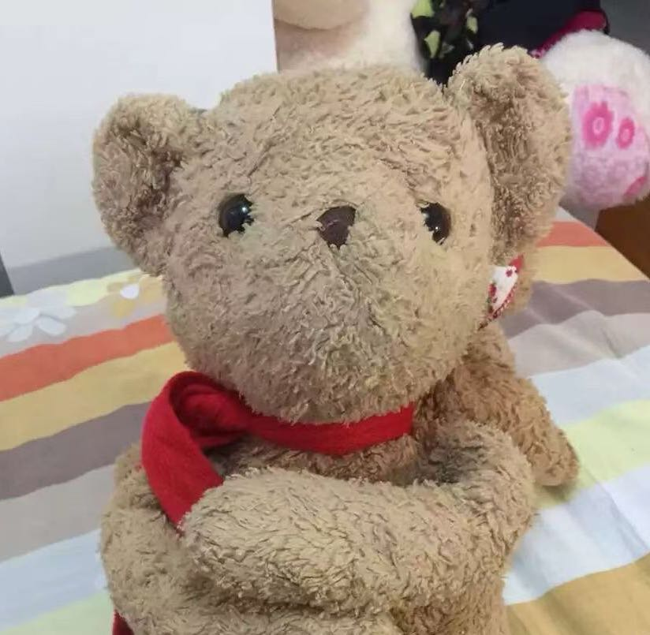

实验（一）解剖hkx实验报告
实验地点：哪都可以
实验内容：想做什么都可以
实验目的：尽可能多的了解hkx
实验步骤：没有什么步骤，怎么写都可以（可以问一下豆包怎么写）
通过调查我们得到了以下信息
家庭成员组成：妈妈爸爸和我和红豆饭（一只熊）
最近在干什么：迷上了《后会友期》”于公于私于情于理“
最近烦恼的事情：概率论的期中考试（已经考完了呵呵呵（
想做但是没有做成的事情：想去吃盛香亭但是为什么周六周天一直在上课！
韩可昕最爱的那个她；占雅婷(让我写的）
吉尼斯懒人记录保持者： 希望明年我真的可以改掉拖延症，至少不要把计划本当草稿纸了
"这里只展示一部分的我"
剩下的的内容需要付费观看